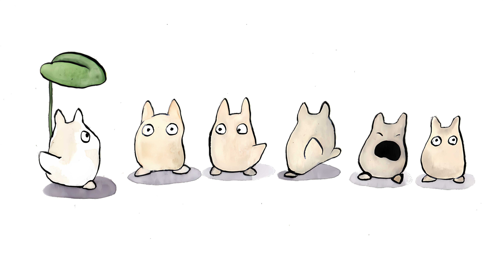
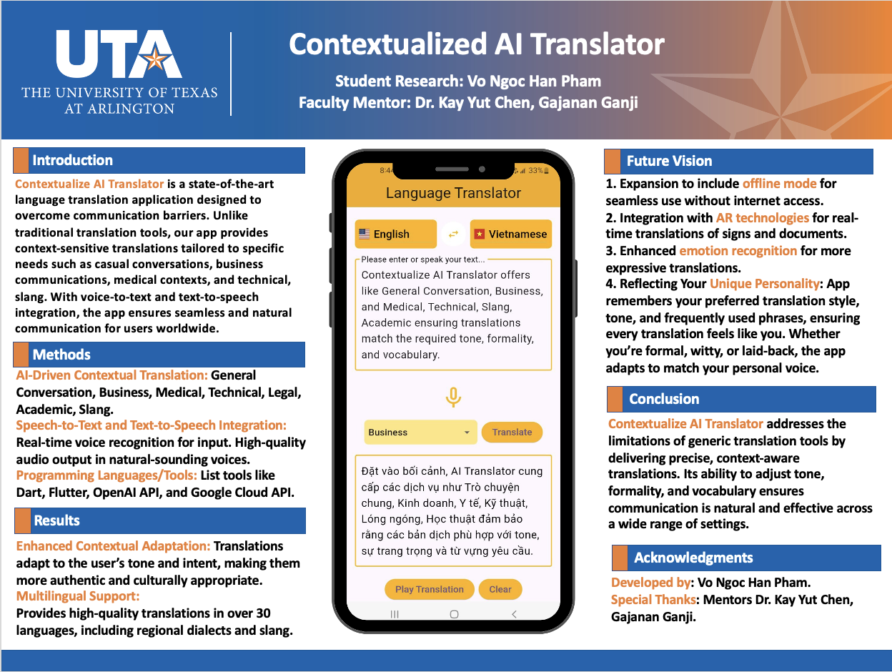

I’m an entry-level programmer passionate about web development and technology. I have experience with HTML, CSS, and JavaScript, and I’m always eager to learn new skills and improve through real projects. I’m hardworking, adaptable, and excited to grow in the tech industry.
